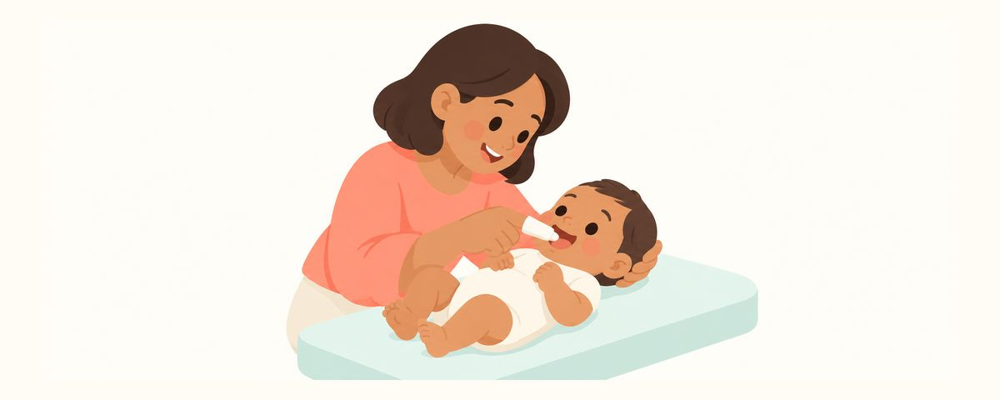

Dişler çıkmadan bebeğin diş etlerini silmek: gazlı bezle ilk ağız bakımı
Diş çıkmadan önce de beslenme sonrası diş etlerini nemli gazlı bezle silmek iyi gelir. Nedenini, sıklığını, adım adım silmeyi ve bebek istemezse ne yapacağınızı anlattık.
Bir bakışta
- Günde bir ya da iki kez, özellikle son beslenmeden sonra silin
- Gazlı bezi kaynatılıp soğutulmuş suyla nemlendirin
- Henüz diş macunu yok. İlk diş çıkınca başlayın
Henüz tek bir dişi yokken bebeğinizin ağzını silmeniz gerekip gerekmediğini merak ediyor olabilirsiniz. Dişler çıkmadan diş etlerini silmek zor değildir ve ileride diş fırçalama alışkanlığını çok kolaylaştırır. Neden sildiğimizi, ne zaman ve nasıl sileceğinizi, bebeğiniz istemediğinde neler yapabileceğinizi derledik.
Diş olmasa da silmek neden iyi gelir?
Beslenmeden sonra bebeğin ağzında bir miktar süt kalır. Kalan bu süt, ağızdaki bakterilerin besini olur. Bakteriler dişler çıkmadan önce bile diş etlerine ve dile yerleşmeye başlar. Beslenmeden sonra diş etlerini silmek ağzı temiz tutmaya yardımcı olur.
Daha önemli bir neden de alışmaktır. Ağız bebek için çok hassas bir yerdir. İlk diş çıktığı gün ağzına birden fırça sokulursa irkilip reddetmesi kolaydır. Dişler çıkmadan önce ağzına sizin dokunuşunuza alışan bebekler ilk fırçalamada çok daha az direnir. Diş eti silmek, ömür boyu sürecek fırçalama alışkanlığının ilk adımıdır.
Günde bir ya da iki kez silmek yeterlidir. Her beslenmeden sonra silmeniz gerekmez, ama günün son beslenmesinden sonra mutlaka silin. Çünkü uyku sırasında tükürük azalır ve ağzı temizleme gücü zayıflar.
Henüz diş macunu kullanılmaz. Florürlü diş macununa ilk diş çıktıktan sonra, pirinç tanesi kadar başlanır. İlk diş görününce gazlı bezden parmak fırçasına ya da bebek diş fırçasına kendiliğinden geçebilirsiniz. O zamana kadar kazandığınız alışkanlık sayesinde başlamak çok daha kolay olur.
Bir parça gazlı bezle şöyle silin
Temiz bir gazlı bez ya da yumuşak bir bez ve kaynatılıp soğutulmuş su yeterlidir.
- Ellerinizi sabunla iyice yıkayın.
- Gazlı bezi ya da yumuşak bezi kaynatılıp soğutulmuş suyla ıslatın ve hafifçe sıkın.
- Bezi işaret parmağınıza bir tur sarın.
- Bebeğinizi kucağınıza yatırın ya da kolunuzda tutup başını destekleyin. Yüzünü rahatça gördüğünüz ve başının sallanmadığı bir pozisyon en iyisidir.
- Alt dudağını hafifçe indirin ve alt diş etini içten dışa doğru nazikçe silin. Ardından üst diş etini de aynı şekilde silin.
- Son olarak dili içten öne doğru bir iki kez hafifçe silin.
Neredeyse hiç güç uygulamanıza gerek yok. Diş etini ovmaktan çok, üzerinden nazikçe geçtiğinizi düşünün. Dilin arka kısmına fazla girerseniz bebeğiniz öğürebilir, bu yüzden yalnızca gördüğünüz yere kadar silin.
Ebeveynlerin sık yaptığı hataları da bilin. Beyaz bir şey görünce sertçe ovup çıkarmaya çalışmak ya da daha temiz olsun diye tuzlu su veya başka temizleyiciler kullanmak bunlardandır. Bebeğin diş eti çok yumuşaktır. Sade suyla nazikçe silmek yeterlidir.
Gazlı bezi bir kez kullanıp yenisiyle değiştirmek daha temizdir.
Bebeğiniz başını çevirse ya da ağlasa da sorun değil. Şarkı söyleyerek ya da konuşarak kısa tutun ve her gün aynı saatte tekrarlayın; zamanla alışır. Beslenme sonrası gaz çıkarma ya da banyonun bitişi gibi zaten her gün yaptığınız bir şeye bağlarsanız unutmazsınız.
Sık sorulan sorular
Ne zaman başlamalıyım?
Bebeğiniz doğduktan sonra istediğiniz zaman başlayabilirsiniz. Ne kadar erken başlarsanız, ağzına dokunulmasına o kadar doğal biçimde alışır.
Her beslenmeden sonra silmem gerekir mi?
Hayır, günde bir ya da iki kez yeterlidir. Ancak günün son beslenmesinden sonra silmeniz iyi olur.
Musluk suyuyla ıslatabilir miyim?
Dişler çıkmadan diş etlerini silerken kaynatılıp soğutulmuş su kullanmanız önerilir. Ilık olup olmadığını bileğinize değdirerek kontrol ederseniz içiniz rahat olur.
Dilinde beyaz bir şey var. Mutlaka silmem gerekir mi?
Nemli gazlı bezle hafifçe sildiğinizde kolayca çıkıyorsa süt kalıntısıdır. Kolay silinmeyen beyaz bir tabakaysa zorla ovmayın; bir çocuk doktoruna ya da diş hekimine gösterin.
Bebeğim hiç sevmiyor. Bırakabilir miyim?
Başta istememesi çok doğaldır. Birkaç saniye silip bitirseniz bile olur; her gün aynı sırayla devam edin. Alıştıkça ilk diş fırçalama da çok daha kolay geçer.
Şu durumlarda diş hekimine gidin
- Diş etlerinde ya da dilde silinmeyen beyaz bir tabaka kalıyorsa
- Diş etleri şişmişse ve bebeğiniz beslenmeyi reddediyorsa
- Diş etinde beslenmeyi engelleyen kabarık bir şişlik oluştuysa
- Bebeğiniz dişle doğduysa
- İlk diş çıktıysa 6 ay içinde, en geç ilk yaş gününden önce ilk diş hekimi ziyaretini yapın
Doğru zamanda alın
Diş Takvimi uygulamasına çocuğunuzun doğum tarihini (veya tahmini doğum tarihini) girin; bu yazılar gerektiği zaman hatırlatma olarak size ulaşsın. Ücretsiz, üyelik gerekmez.
Kaynaklar
- AAPD · Perinatal and Infant Oral Health Care (2023)
Bu uygulamadaki bilgiler genel bilgilendirme ve eğitim amaçlıdır; profesyonel diş hekimi bakımının yerini tutmaz. Çocuğunuzun durumu hakkında lütfen bir diş hekimine danışın.